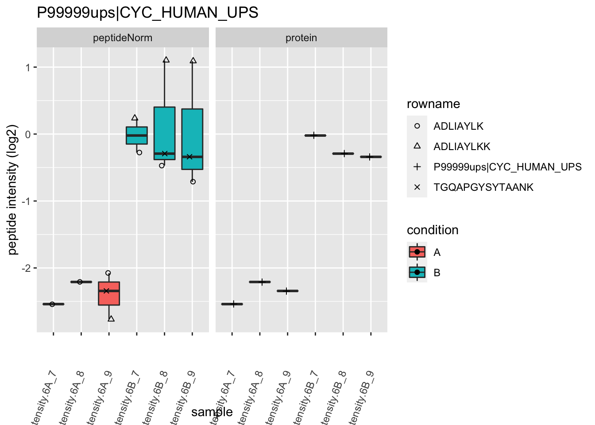
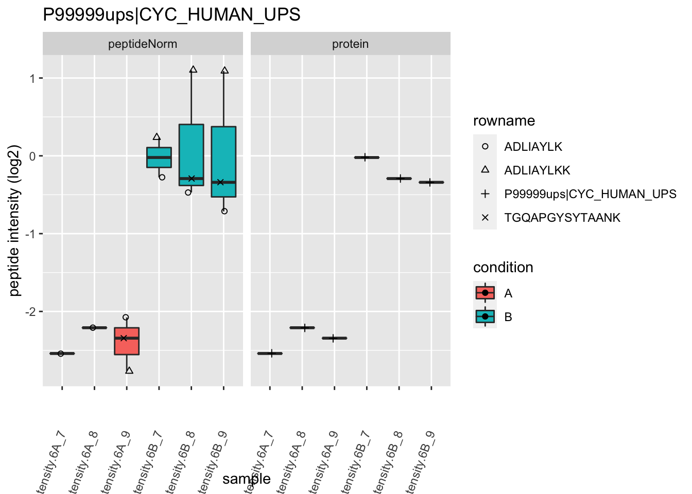

All materials are licensed under the Creative Commons Attribution-NonCommercial-ShareAlike 4.0 International (CC BY-NC-SA 4.0)
Background
This case-study is a subset of the data of the 6th study of the Clinical Proteomic Technology Assessment for Cancer (CPTAC). In this experiment, the authors spiked the Sigma Universal Protein Standard mixture 1 (UPS1) containing 48 different human proteins in a protein background of 60 ng/\(\mu\)L Saccharomyces cerevisiae strain BY4741. Two different spike-in concentrations were used: 6A (0.25 fmol UPS1 proteins/\(\mu\)L) and 6B (0.74 fmol UPS1 proteins/\(\mu\)L) [5]. We limited ourselves to the data of LTQ-Orbitrap W at site 56. The data were searched with MaxQuant version 1.5.2.8, and detailed search settings were described in Goeminne et al. (2016) [1]. Three replicates are available for each concentration.
DISCLAIMER
- NOTE THAT MEDIAN SUMMARISATION IS SUBOPTIMAL!
- THIS IS FOR DIDACTICAL PURPOSES ONLY.
Data
We first import the data from peptideRaws.txt file. This is the file containing your peptideRaw-level intensities. For a MaxQuant search [6], this peptideRaws.txt file can be found by default in the “path_to_raw_files/combined/txt/” folder from the MaxQuant output, with “path_to_raw_files” the folder where the raw files were saved. In this vignette, we use a MaxQuant peptideRaws file which is a subset of the cptac study. This data is available in the msdata package. To import the data we use the QFeatures package.
We generate the object peptideRawFile with the path to the peptideRaws.txt file. Using the grepEcols function, we find the columns that contain the expression data of the peptideRaws in the peptideRaws.txt file.
We first import the data from peptideRaws.txt file. This is the file containing your peptideRaw-level intensities. For a MaxQuant search [6], this peptideRaws.txt file can be found by default in the “path_to_raw_files/combined/txt/” folder from the MaxQuant output, with “path_to_raw_files” the folder where the raw files were saved. In this vignette, we use a MaxQuant peptideRaws file which is a subset of the cptac study. This data is available in the msdata package. To import the data we use the QFeatures package.
We generate the object peptideRawFile with the path to the peptideRaws.txt file. Using the grepEcols function, we find the columns that contain the expression data of the peptideRaws in the peptideRaws.txt file.
library(tidyverse)
library(limma)
library(QFeatures)
library(msqrob2)
library(plotly)
library(gridExtra)
peptidesFile <- "https://raw.githubusercontent.com/statOmics/SGA2020/data/quantification/cptacAvsB_lab3/peptides.txt"
ecols <- grep("Intensity\\.", names(read.delim(peptidesFile)))
pe <- readQFeatures(
table = peptidesFile, fnames = 1, ecol = ecols,
name = "peptideRaw", sep = "\t"
)
library(tidyverse)
library(limma)
library(QFeatures)
library(msqrob2)
library(plotly)
peptidesFile <- "https://raw.githubusercontent.com/statOmics/SGA2020/data/quantification/cptacAvsB_lab3/peptides.txt"
ecols <- grep(
"Intensity\\.",
names(read.delim(peptidesFile))
)
pe <- readQFeatures(
table = peptidesFile,
fnames = 1,
ecol = ecols,
name = "peptideRaw", sep="\t")
colnames(pe)
## CharacterList of length 1
## [["peptideRaw"]] Intensity.6A_7 Intensity.6A_8 ... Intensity.6B_9
In the following code chunk, we can extract the spikein condition from the raw file name.
cond <- which(
strsplit(colnames(pe)[[1]][1], split = "")[[1]] == "A") # find where condition is stored
colData(pe)$condition <- substr(colnames(pe), cond, cond) %>%
unlist %>%
as.factor
We calculate how many non zero intensities we have per peptide and this will be useful for filtering.
rowData(pe[["peptideRaw"]])$nNonZero <- rowSums(assay(pe[["peptideRaw"]]) > 0)
Peptides with zero intensities are missing peptides and should be represent with a NA value rather than 0.
pe <- zeroIsNA(pe, "peptideRaw") # convert 0 to NA
Data exploration
45% of all peptide intensities are missing and for some peptides we do not even measure a signal in any sample.
Preprocessing
This section preforms preprocessing for the peptide data. This include
- log transformation,
- filtering and
- summarisation of the data.
Note, that the summarisation is done using median summarisation instead of the default that is robust summarisation. This is mainly for didactical purposes to see what the impact is of suboptimal preprocessing.
Filtering
- Handling overlapping protein groups
In our approach a peptide can map to multiple proteins, as long as there is none of these proteins present in a smaller subgroup.
pe[["peptideLog"]] <-
pe[["peptideLog"]][rowData(pe[["peptideLog"]])$Proteins
%in% smallestUniqueGroups(rowData(pe[["peptideLog"]])$Proteins),]
- Remove reverse sequences (decoys) and contaminants
We now remove the contaminants, peptides that map to decoy sequences, and proteins which were only identified by peptides with modifications.
pe[["peptideLog"]] <- pe[["peptideLog"]][rowData(pe[["peptideLog"]])$Reverse != "+", ]
pe[["peptideLog"]] <- pe[["peptideLog"]][rowData(pe[["peptideLog"]])$
Potential.contaminant != "+", ]
- Drop peptides that were only identified in one sample
We keep peptides that were observed at last twice.
pe[["peptideLog"]] <- pe[["peptideLog"]][rowData(pe[["peptideLog"]])$nNonZero >= 2, ]
nrow(pe[["peptideLog"]])
## [1] 7011
We keep 7011 peptides upon filtering.
Explore normalized data
Upon the normalisation the density curves are nicely registered
pe[["peptideNorm"]] %>%
assay %>%
as.data.frame() %>%
gather(sample, intensity) %>%
mutate(condition = colData(pe)[sample,"condition"]) %>%
ggplot(aes(x = intensity,group = sample,color = condition)) +
geom_density()
## Warning: Removed 8167 rows containing non-finite values (stat_density).

We can visualize our data using a Multi Dimensional Scaling plot, eg. as provided by the limma package.
pe[["peptideNorm"]] %>%
assay %>%
limma::plotMDS(col = as.numeric(colData(pe)$condition))

The first axis in the plot is showing the leading log fold changes (differences on the log scale) between the samples.
We notice that the leading differences (log FC) in the peptide data seems to be driven by technical variability. Indeed, the samples do not seem to be clearly separated according to the spike-in condition.
Summarization to protein level
- We use median summarization in aggregateFeatures.
- Note, that this is a suboptimal normalisation procedure!
- By default robust summarization is used:
fun = MsCoreUtils::robustSummary()
pe <- aggregateFeatures(pe,
i = "peptideNorm",
fcol = "Proteins",
na.rm = TRUE,
name = "proteinMedian",
fun = matrixStats::colMedians)
## Your quantitative and row data contain missing values. Please read the
## relevant section(s) in the aggregateFeatures manual page regarding the
## effects of missing values on data aggregation.
plotMDS(assay(pe[["proteinMedian"]]), col = as.numeric(colData(pe)$condition))
Data Analysis
Estimation
We model the protein level expression values using msqrob. By default msqrob2 estimates the model parameters using robust regression.
We will model the data with a different group mean. The group is incoded in the variable condition of the colData. We can specify this model by using a formula with the factor condition as its predictor: formula = ~condition.
Note, that a formula always starts with a symbol ‘~’.
pe <- msqrob(object = pe, i = "proteinMedian", formula = ~condition)
Inference
First, we extract the parameter names of the model by looking at the first model. The models are stored in the row data of the assay under the default name msqrobModels.
getCoef(rowData(pe[["proteinMedian"]])$msqrobModels[[1]])
## (Intercept) conditionB
## -2.793005 1.541958
Spike-in condition A is the reference class. So the mean log2 expression for samples from condition A is ‘(Intercept). The mean log2 expression for samples from condition B is’(Intercept)+conditionB’. Hence, the average log2 fold change between condition b and condition a is modelled using the parameter ‘conditionB’. Thus, we assess the contrast ‘conditionB = 0’ with our statistical test.
L <- makeContrast("conditionB=0", parameterNames = c("conditionB"))
pe <- hypothesisTest(object = pe, i = "proteinMedian", contrast = L)
Plots
Volcano-plot
volcano <- ggplot(rowData(pe[["proteinMedian"]])$conditionB,
aes(x = logFC, y = -log10(pval), color = adjPval < 0.05)) +
geom_point(cex = 2.5) +
scale_color_manual(values = alpha(c("black", "red"), 0.5)) + theme_minimal()
volcano
Heatmap
We first select the names of the proteins that were declared signficant.
sigNames <- rowData(pe[["proteinMedian"]])$conditionB %>%
rownames_to_column("proteinMedian") %>%
filter(adjPval<0.05) %>%
pull(proteinMedian)
heatmap(assay(pe[["proteinMedian"]])[sigNames, ])
Boxplots
We make boxplot of the log2 FC and stratify according to the whether a protein is spiked or not.
rowData(pe[["proteinMedian"]])$conditionB %>%
rownames_to_column(var = "protein") %>%
ggplot(aes(x=grepl("UPS",protein),y=logFC)) +
geom_boxplot() +
xlab("UPS") +
geom_segment(
x = 1.5,
xend = 2.5,
y = log2(0.74/0.25),
yend = log2(0.74/0.25),
colour="red") +
geom_segment(
x = 0.5,
xend = 1.5,
y = 0,
yend = 0,
colour="red") +
annotate(
"text",
x = c(1,2),
y = c(0,log2(0.74/0.25))+.1,
label = c(
"log2 FC Ecoli = 0",
paste0("log2 FC UPS = ",round(log2(0.74/0.25),2))
),
colour = "red")
## Warning: Removed 166 rows containing non-finite values (stat_boxplot).

What do you observe?
Detail plots
We first extract the normalized peptideRaw expression values for a particular protein.
for (protName in sigNames)
{
pePlot <- pe[protName, , c("peptideNorm","proteinMedian")]
pePlotDf <- data.frame(longFormat(pePlot))
pePlotDf$assay <- factor(pePlotDf$assay,
levels = c("peptideNorm", "proteinMedian"))
pePlotDf$condition <- as.factor(colData(pePlot)[pePlotDf$colname, "condition"])
# plotting
p1 <- ggplot(data = pePlotDf,
aes(x = colname, y = value, group = rowname)) +
geom_line() + geom_point() + theme_minimal() +
facet_grid(~assay) + ggtitle(protName)
print(p1)
# plotting 2
p2 <- ggplot(pePlotDf, aes(x = colname, y = value, fill = condition)) +
geom_boxplot(outlier.shape = NA) + geom_point(position = position_jitter(width = .1),
aes(shape = rowname)) +
scale_shape_manual(values = 1:nrow(pePlotDf)) +
labs(title = protName, x = "sample", y = "peptide intensity (log2)") + theme_minimal()
facet_grid(~assay)
print(p2)
}

 

Session Info
With respect to reproducibility, it is highly recommended to include a session info in your script so that readers of your output can see your particular setup of R.
## R version 4.1.0 (2021-05-18)
## Platform: x86_64-apple-darwin17.0 (64-bit)
## Running under: macOS Catalina 10.15.7
##
## Matrix products: default
## BLAS: /Library/Frameworks/R.framework/Versions/4.1/Resources/lib/libRblas.dylib
## LAPACK: /Library/Frameworks/R.framework/Versions/4.1/Resources/lib/libRlapack.dylib
##
## locale:
## [1] en_US.UTF-8/en_US.UTF-8/en_US.UTF-8/C/en_US.UTF-8/en_US.UTF-8
##
## attached base packages:
## [1] parallel stats4 stats graphics grDevices utils datasets
## [8] methods base
##
## other attached packages:
## [1] gridExtra_2.3 plotly_4.9.4.1
## [3] msqrob2_1.0.0 QFeatures_1.2.0
## [5] MultiAssayExperiment_1.18.0 SummarizedExperiment_1.22.0
## [7] Biobase_2.52.0 GenomicRanges_1.44.0
## [9] GenomeInfoDb_1.28.0 IRanges_2.26.0
## [11] S4Vectors_0.30.0 BiocGenerics_0.38.0
## [13] MatrixGenerics_1.4.0 matrixStats_0.59.0
## [15] limma_3.48.1 forcats_0.5.1
## [17] stringr_1.4.0 dplyr_1.0.7
## [19] purrr_0.3.4 readr_1.4.0
## [21] tidyr_1.1.3 tibble_3.1.2
## [23] ggplot2_3.3.5 tidyverse_1.3.1
##
## loaded via a namespace (and not attached):
## [1] nlme_3.1-152 ProtGenerics_1.24.0 bitops_1.0-7
## [4] fs_1.5.0 lubridate_1.7.10 httr_1.4.2
## [7] tools_4.1.0 backports_1.2.1 utf8_1.2.1
## [10] R6_2.5.0 DBI_1.1.1 lazyeval_0.2.2
## [13] colorspace_2.0-2 withr_2.4.2 tidyselect_1.1.1
## [16] compiler_4.1.0 cli_2.5.0 rvest_1.0.0
## [19] xml2_1.3.2 DelayedArray_0.18.0 labeling_0.4.2
## [22] scales_1.1.1 digest_0.6.27 minqa_1.2.4
## [25] rmarkdown_2.9 XVector_0.32.0 pkgconfig_2.0.3
## [28] htmltools_0.5.1.1 lme4_1.1-27.1 highr_0.9
## [31] dbplyr_2.1.1 htmlwidgets_1.5.3 rlang_0.4.11
## [34] readxl_1.3.1 rstudioapi_0.13 farver_2.1.0
## [37] generics_0.1.0 jsonlite_1.7.2 BiocParallel_1.26.0
## [40] RCurl_1.98-1.3 magrittr_2.0.1 GenomeInfoDbData_1.2.6
## [43] Matrix_1.3-3 Rcpp_1.0.6 munsell_0.5.0
## [46] fansi_0.5.0 MsCoreUtils_1.4.0 lifecycle_1.0.0
## [49] stringi_1.6.2 yaml_2.2.1 MASS_7.3-54
## [52] zlibbioc_1.38.0 grid_4.1.0 crayon_1.4.1
## [55] lattice_0.20-44 splines_4.1.0 haven_2.4.1
## [58] hms_1.1.0 knitr_1.33 ps_1.6.0
## [61] pillar_1.6.1 boot_1.3-28 codetools_0.2-18
## [64] reprex_2.0.0 glue_1.4.2 evaluate_0.14
## [67] data.table_1.14.0 modelr_0.1.8 nloptr_1.2.2.2
## [70] vctrs_0.3.8 cellranger_1.1.0 gtable_0.3.0
## [73] clue_0.3-59 assertthat_0.2.1 xfun_0.24
## [76] broom_0.7.8 AnnotationFilter_1.16.0 viridisLite_0.4.0
## [79] cluster_2.1.2 ellipsis_0.3.2
LS0tCnRpdGxlOiAiSW50cm9kdWN0aW9uIHRvIHByb3Rlb21pY3MgZGF0YSBhbmFseXNpczogbWVkaWFuIHN1bW1hcml6YXRpb24iCmF1dGhvcjogIkxpZXZlbiBDbGVtZW50IgpkYXRlOiAic3RhdE9taWNzLCBHaGVudCBVbml2ZXJzaXR5IChodHRwczovL3N0YXRvbWljcy5naXRodWIuaW8pIgpvdXRwdXQ6CiAgICBodG1sX2RvY3VtZW50OgogICAgICBjb2RlX2Rvd25sb2FkOiB0cnVlCiAgICAgIHRoZW1lOiBjb3NtbwogICAgICB0b2M6IHRydWUKICAgICAgdG9jX2Zsb2F0OiB0cnVlCiAgICAgIGhpZ2hsaWdodDogdGFuZ28KICAgICAgbnVtYmVyX3NlY3Rpb25zOiB0cnVlCi0tLQoKQWxsIG1hdGVyaWFscyBhcmUgbGljZW5zZWQgdW5kZXIgdGhlIFtDcmVhdGl2ZSBDb21tb25zIEF0dHJpYnV0aW9uLU5vbkNvbW1lcmNpYWwtU2hhcmVBbGlrZSA0LjAgSW50ZXJuYXRpb25hbCAoQ0MgQlktTkMtU0EgNC4wKV0oaHR0cHM6Ly9jcmVhdGl2ZWNvbW1vbnMub3JnL2xpY2Vuc2VzL2J5LW5jLXNhLzQuMCkKCiMgQmFja2dyb3VuZApUaGlzIGNhc2Utc3R1ZHkgaXMgYSBzdWJzZXQgb2YgdGhlIGRhdGEgb2YgdGhlIDZ0aCBzdHVkeSBvZiB0aGUgQ2xpbmljYWwKUHJvdGVvbWljIFRlY2hub2xvZ3kgQXNzZXNzbWVudCBmb3IgQ2FuY2VyIChDUFRBQykuCkluIHRoaXMgZXhwZXJpbWVudCwgdGhlIGF1dGhvcnMgc3Bpa2VkIHRoZSBTaWdtYSBVbml2ZXJzYWwgUHJvdGVpbiBTdGFuZGFyZAptaXh0dXJlIDEgKFVQUzEpIGNvbnRhaW5pbmcgNDggZGlmZmVyZW50IGh1bWFuIHByb3RlaW5zIGluIGEgcHJvdGVpbiBiYWNrZ3JvdW5kCm9mIDYwIG5nLyRcbXUkTCBTYWNjaGFyb215Y2VzIGNlcmV2aXNpYWUgc3RyYWluIEJZNDc0MS4KVHdvIGRpZmZlcmVudCBzcGlrZS1pbiBjb25jZW50cmF0aW9ucyB3ZXJlIHVzZWQ6CjZBICgwLjI1IGZtb2wgVVBTMSBwcm90ZWlucy8kXG11JEwpIGFuZCA2QiAoMC43NCBmbW9sIFVQUzEgcHJvdGVpbnMvJFxtdSRMKSBbNV0uCldlIGxpbWl0ZWQgb3Vyc2VsdmVzIHRvIHRoZSBkYXRhIG9mIExUUS1PcmJpdHJhcCBXIGF0IHNpdGUgNTYuClRoZSBkYXRhIHdlcmUgc2VhcmNoZWQgd2l0aCBNYXhRdWFudCB2ZXJzaW9uIDEuNS4yLjgsIGFuZApkZXRhaWxlZCBzZWFyY2ggc2V0dGluZ3Mgd2VyZSBkZXNjcmliZWQgaW4gR29lbWlubmUgZXQgYWwuICgyMDE2KSBbMV0uClRocmVlIHJlcGxpY2F0ZXMgYXJlIGF2YWlsYWJsZSBmb3IgZWFjaCBjb25jZW50cmF0aW9uLgoKKipESVNDTEFJTUVSKiogCgotIE5PVEUgVEhBVCBNRURJQU4gU1VNTUFSSVNBVElPTiBJUyBTVUJPUFRJTUFMISAKLSBUSElTIElTIEZPUiBESURBQ1RJQ0FMIFBVUlBPU0VTIE9OTFkuCi0gCgojIERhdGEKCldlIGZpcnN0IGltcG9ydCB0aGUgZGF0YSBmcm9tIHBlcHRpZGVSYXdzLnR4dCBmaWxlLiBUaGlzIGlzIHRoZSBmaWxlIGNvbnRhaW5pbmcKeW91ciBwZXB0aWRlUmF3LWxldmVsIGludGVuc2l0aWVzLiBGb3IgYSBNYXhRdWFudCBzZWFyY2ggWzZdLAp0aGlzIHBlcHRpZGVSYXdzLnR4dCBmaWxlIGNhbiBiZSBmb3VuZCBieSBkZWZhdWx0IGluIHRoZQoicGF0aF90b19yYXdfZmlsZXMvY29tYmluZWQvdHh0LyIgZm9sZGVyIGZyb20gdGhlIE1heFF1YW50IG91dHB1dCwKd2l0aCAicGF0aF90b19yYXdfZmlsZXMiIHRoZSBmb2xkZXIgd2hlcmUgdGhlIHJhdyBmaWxlcyB3ZXJlIHNhdmVkLgpJbiB0aGlzIHZpZ25ldHRlLCB3ZSB1c2UgYSBNYXhRdWFudCBwZXB0aWRlUmF3cyBmaWxlIHdoaWNoIGlzIGEgc3Vic2V0Cm9mIHRoZSBjcHRhYyBzdHVkeS4gVGhpcyBkYXRhIGlzIGF2YWlsYWJsZSBpbiB0aGUgYG1zZGF0YWAgcGFja2FnZS4KVG8gaW1wb3J0IHRoZSBkYXRhIHdlIHVzZSB0aGUgYFFGZWF0dXJlc2AgcGFja2FnZS4KCldlIGdlbmVyYXRlIHRoZSBvYmplY3QgcGVwdGlkZVJhd0ZpbGUgd2l0aCB0aGUgcGF0aCB0byB0aGUgcGVwdGlkZVJhd3MudHh0IGZpbGUuClVzaW5nIHRoZSBgZ3JlcEVjb2xzYCBmdW5jdGlvbiwgd2UgZmluZCB0aGUgY29sdW1ucyB0aGF0IGNvbnRhaW4gdGhlIGV4cHJlc3Npb24KZGF0YSBvZiB0aGUgcGVwdGlkZVJhd3MgaW4gdGhlIHBlcHRpZGVSYXdzLnR4dCBmaWxlLgoKCldlIGZpcnN0IGltcG9ydCB0aGUgZGF0YSBmcm9tIHBlcHRpZGVSYXdzLnR4dCBmaWxlLiBUaGlzIGlzIHRoZSBmaWxlIGNvbnRhaW5pbmcKeW91ciBwZXB0aWRlUmF3LWxldmVsIGludGVuc2l0aWVzLiBGb3IgYSBNYXhRdWFudCBzZWFyY2ggWzZdLAp0aGlzIHBlcHRpZGVSYXdzLnR4dCBmaWxlIGNhbiBiZSBmb3VuZCBieSBkZWZhdWx0IGluIHRoZQoicGF0aF90b19yYXdfZmlsZXMvY29tYmluZWQvdHh0LyIgZm9sZGVyIGZyb20gdGhlIE1heFF1YW50IG91dHB1dCwKd2l0aCAicGF0aF90b19yYXdfZmlsZXMiIHRoZSBmb2xkZXIgd2hlcmUgdGhlIHJhdyBmaWxlcyB3ZXJlIHNhdmVkLgpJbiB0aGlzIHZpZ25ldHRlLCB3ZSB1c2UgYSBNYXhRdWFudCBwZXB0aWRlUmF3cyBmaWxlIHdoaWNoIGlzIGEgc3Vic2V0Cm9mIHRoZSBjcHRhYyBzdHVkeS4gVGhpcyBkYXRhIGlzIGF2YWlsYWJsZSBpbiB0aGUgYG1zZGF0YWAgcGFja2FnZS4KVG8gaW1wb3J0IHRoZSBkYXRhIHdlIHVzZSB0aGUgYFFGZWF0dXJlc2AgcGFja2FnZS4KCldlIGdlbmVyYXRlIHRoZSBvYmplY3QgcGVwdGlkZVJhd0ZpbGUgd2l0aCB0aGUgcGF0aCB0byB0aGUgcGVwdGlkZVJhd3MudHh0IGZpbGUuClVzaW5nIHRoZSBgZ3JlcEVjb2xzYCBmdW5jdGlvbiwgd2UgZmluZCB0aGUgY29sdW1ucyB0aGF0IGNvbnRhaW4gdGhlIGV4cHJlc3Npb24KZGF0YSBvZiB0aGUgcGVwdGlkZVJhd3MgaW4gdGhlIHBlcHRpZGVSYXdzLnR4dCBmaWxlLgoKYGBge3IsIHdhcm5pbmc9RkFMU0UsIG1lc3NhZ2U9RkFMU0V9CmxpYnJhcnkodGlkeXZlcnNlKQpsaWJyYXJ5KGxpbW1hKQpsaWJyYXJ5KFFGZWF0dXJlcykKbGlicmFyeShtc3Fyb2IyKQpsaWJyYXJ5KHBsb3RseSkKbGlicmFyeShncmlkRXh0cmEpCgpwZXB0aWRlc0ZpbGUgPC0gImh0dHBzOi8vcmF3LmdpdGh1YnVzZXJjb250ZW50LmNvbS9zdGF0T21pY3MvU0dBMjAyMC9kYXRhL3F1YW50aWZpY2F0aW9uL2NwdGFjQXZzQl9sYWIzL3BlcHRpZGVzLnR4dCIKCmVjb2xzIDwtIGdyZXAoIkludGVuc2l0eVxcLiIsIG5hbWVzKHJlYWQuZGVsaW0ocGVwdGlkZXNGaWxlKSkpCgpwZSA8LSByZWFkUUZlYXR1cmVzKAogICAgdGFibGUgPSBwZXB0aWRlc0ZpbGUsIGZuYW1lcyA9IDEsIGVjb2wgPSBlY29scywKICAgIG5hbWUgPSAicGVwdGlkZVJhdyIsIHNlcCA9ICJcdCIKKQpgYGAKCmBgYHtyLCB3YXJuaW5nPUZBTFNFLCBtZXNzYWdlPUZBTFNFfQpsaWJyYXJ5KHRpZHl2ZXJzZSkKbGlicmFyeShsaW1tYSkKbGlicmFyeShRRmVhdHVyZXMpCmxpYnJhcnkobXNxcm9iMikKbGlicmFyeShwbG90bHkpCgpwZXB0aWRlc0ZpbGUgPC0gImh0dHBzOi8vcmF3LmdpdGh1YnVzZXJjb250ZW50LmNvbS9zdGF0T21pY3MvU0dBMjAyMC9kYXRhL3F1YW50aWZpY2F0aW9uL2NwdGFjQXZzQl9sYWIzL3BlcHRpZGVzLnR4dCIKCmVjb2xzIDwtIGdyZXAoCiAgIkludGVuc2l0eVxcLiIsIAogIG5hbWVzKHJlYWQuZGVsaW0ocGVwdGlkZXNGaWxlKSkKICApCgpwZSA8LSByZWFkUUZlYXR1cmVzKAogIHRhYmxlID0gcGVwdGlkZXNGaWxlLAogIGZuYW1lcyA9IDEsCiAgZWNvbCA9IGVjb2xzLAogIG5hbWUgPSAicGVwdGlkZVJhdyIsIHNlcD0iXHQiKQoKY29sbmFtZXMocGUpCmBgYAoKSW4gdGhlIGZvbGxvd2luZyBjb2RlIGNodW5rLCB3ZSBjYW4gZXh0cmFjdCB0aGUgc3Bpa2VpbiBjb25kaXRpb24gZnJvbSB0aGUgcmF3IGZpbGUgbmFtZS4KCmBgYHtyfQpjb25kIDwtIHdoaWNoKAogIHN0cnNwbGl0KGNvbG5hbWVzKHBlKVtbMV1dWzFdLCBzcGxpdCA9ICIiKVtbMV1dID09ICJBIikgIyBmaW5kIHdoZXJlIGNvbmRpdGlvbiBpcyBzdG9yZWQKCmNvbERhdGEocGUpJGNvbmRpdGlvbiA8LSBzdWJzdHIoY29sbmFtZXMocGUpLCBjb25kLCBjb25kKSAlPiUKICB1bmxpc3QgJT4lICAKICBhcy5mYWN0b3IKYGBgCgoKV2UgY2FsY3VsYXRlIGhvdyBtYW55IG5vbiB6ZXJvIGludGVuc2l0aWVzIHdlIGhhdmUgcGVyIHBlcHRpZGUgYW5kIHRoaXMKd2lsbCBiZSB1c2VmdWwgZm9yIGZpbHRlcmluZy4KCmBgYHtyfQpyb3dEYXRhKHBlW1sicGVwdGlkZVJhdyJdXSkkbk5vblplcm8gPC0gcm93U3Vtcyhhc3NheShwZVtbInBlcHRpZGVSYXciXV0pID4gMCkKYGBgCgoKUGVwdGlkZXMgd2l0aCB6ZXJvIGludGVuc2l0aWVzIGFyZSBtaXNzaW5nIHBlcHRpZGVzIGFuZCBzaG91bGQgYmUgcmVwcmVzZW50CndpdGggYSBgTkFgIHZhbHVlIHJhdGhlciB0aGFuIGAwYC4KYGBge3J9CnBlIDwtIHplcm9Jc05BKHBlLCAicGVwdGlkZVJhdyIpICMgY29udmVydCAwIHRvIE5BCmBgYAoKCiMjIERhdGEgZXhwbG9yYXRpb24KCmByIGZvcm1hdChtZWFuKGlzLm5hKGFzc2F5KHBlW1sicGVwdGlkZVJhdyJdXSkpKSoxMDAsZGlnaXRzPTIpYCUgb2YgYWxsIHBlcHRpZGUKaW50ZW5zaXRpZXMgYXJlIG1pc3NpbmcgYW5kIGZvciBzb21lIHBlcHRpZGVzIHdlIGRvIG5vdCBldmVuIG1lYXN1cmUgYSBzaWduYWwKaW4gYW55IHNhbXBsZS4KCgojIFByZXByb2Nlc3NpbmcKClRoaXMgc2VjdGlvbiBwcmVmb3JtcyBwcmVwcm9jZXNzaW5nIGZvciB0aGUgcGVwdGlkZSBkYXRhLiAKVGhpcyBpbmNsdWRlIAoKLSBsb2cgdHJhbnNmb3JtYXRpb24sIAotIGZpbHRlcmluZyBhbmQgCi0gc3VtbWFyaXNhdGlvbiBvZiB0aGUgZGF0YS4KCk5vdGUsIHRoYXQgdGhlIHN1bW1hcmlzYXRpb24gaXMgZG9uZSB1c2luZyBtZWRpYW4gc3VtbWFyaXNhdGlvbiBpbnN0ZWFkIG9mIHRoZSBkZWZhdWx0IHRoYXQgaXMgcm9idXN0IHN1bW1hcmlzYXRpb24uIFRoaXMgaXMgbWFpbmx5IGZvciBkaWRhY3RpY2FsIHB1cnBvc2VzIHRvIHNlZSB3aGF0IHRoZSBpbXBhY3QgaXMgb2Ygc3Vib3B0aW1hbCBwcmVwcm9jZXNzaW5nLiAKCiMjIExvZyB0cmFuc2Zvcm0gdGhlIGRhdGEKCmBgYHtyfQpwZSA8LSBsb2dUcmFuc2Zvcm0ocGUsIGJhc2UgPSAyLCBpID0gInBlcHRpZGVSYXciLCBuYW1lID0gInBlcHRpZGVMb2ciKQpgYGAKCiMjIEZpbHRlcmluZwoKMS4gSGFuZGxpbmcgb3ZlcmxhcHBpbmcgcHJvdGVpbiBncm91cHMKCkluIG91ciBhcHByb2FjaCBhIHBlcHRpZGUgY2FuIG1hcCB0byBtdWx0aXBsZSBwcm90ZWlucywgYXMgbG9uZyBhcyB0aGVyZSBpcwpub25lIG9mIHRoZXNlIHByb3RlaW5zIHByZXNlbnQgaW4gYSBzbWFsbGVyIHN1Ymdyb3VwLgoKYGBge3J9CnBlW1sicGVwdGlkZUxvZyJdXSA8LQogcGVbWyJwZXB0aWRlTG9nIl1dW3Jvd0RhdGEocGVbWyJwZXB0aWRlTG9nIl1dKSRQcm90ZWlucwogJWluJSBzbWFsbGVzdFVuaXF1ZUdyb3Vwcyhyb3dEYXRhKHBlW1sicGVwdGlkZUxvZyJdXSkkUHJvdGVpbnMpLF0KYGBgCgoyLiBSZW1vdmUgcmV2ZXJzZSBzZXF1ZW5jZXMgKGRlY295cykgYW5kIGNvbnRhbWluYW50cwoKV2Ugbm93IHJlbW92ZSB0aGUgY29udGFtaW5hbnRzLCBwZXB0aWRlcyB0aGF0IG1hcCB0byBkZWNveSBzZXF1ZW5jZXMsIGFuZCBwcm90ZWlucwp3aGljaCB3ZXJlIG9ubHkgaWRlbnRpZmllZCBieSBwZXB0aWRlcyB3aXRoIG1vZGlmaWNhdGlvbnMuCgpgYGB7cn0KcGVbWyJwZXB0aWRlTG9nIl1dIDwtIHBlW1sicGVwdGlkZUxvZyJdXVtyb3dEYXRhKHBlW1sicGVwdGlkZUxvZyJdXSkkUmV2ZXJzZSAhPSAiKyIsIF0KcGVbWyJwZXB0aWRlTG9nIl1dIDwtIHBlW1sicGVwdGlkZUxvZyJdXVtyb3dEYXRhKHBlW1sicGVwdGlkZUxvZyJdXSkkCiAgICBQb3RlbnRpYWwuY29udGFtaW5hbnQgIT0gIisiLCBdCmBgYAoKMy4gRHJvcCBwZXB0aWRlcyB0aGF0IHdlcmUgb25seSBpZGVudGlmaWVkIGluIG9uZSBzYW1wbGUKCldlIGtlZXAgcGVwdGlkZXMgdGhhdCB3ZXJlIG9ic2VydmVkIGF0IGxhc3QgdHdpY2UuCgpgYGB7cn0KcGVbWyJwZXB0aWRlTG9nIl1dIDwtIHBlW1sicGVwdGlkZUxvZyJdXVtyb3dEYXRhKHBlW1sicGVwdGlkZUxvZyJdXSkkbk5vblplcm8gPj0gMiwgXQpucm93KHBlW1sicGVwdGlkZUxvZyJdXSkKYGBgCgpXZSBrZWVwIGByIG5yb3cocGVbWyJwZXB0aWRlTG9nIl1dKWAgcGVwdGlkZXMgdXBvbiBmaWx0ZXJpbmcuCgoKIyMgTm9ybWFsaXplIHRoZSBkYXRhIHVzaW5nIG1lZGlhbiBjZW50ZXJpbmcgCgpXZSBub3JtYWxpemUgdGhlIGRhdGEgYnkgc3Vic3RyYWN0aW5nIHRoZSBzYW1wbGUgbWVkaWFuIGZyb20gZXZlcnkgaW50ZW5zaXR5IGZvciBwZXB0aWRlICRwJCAgaW4gYSBzYW1wbGUgJGkkOiAKCiQkeV97aXB9Xlx0ZXh0e25vcm19ID0geV97aXB9IC0gXGhhdFxtdV9pJCQgCgp3aXRoICRcaGF0XG11X2kkIHRoZSBtZWRpYW4gaW50ZW5zaXR5IG92ZXIgYWxsIG9ic2VydmVkIHBlcHRpZGVzIGluIHNhbXBsZSAkaSQuCgpgYGB7cn0KcGUgPC0gbm9ybWFsaXplKHBlLCAKICAgICAgICAgICAgICAgIGkgPSAicGVwdGlkZUxvZyIsIAogICAgICAgICAgICAgICAgbmFtZSA9ICJwZXB0aWRlTm9ybSIsIAogICAgICAgICAgICAgICAgbWV0aG9kID0gImNlbnRlci5tZWRpYW4iKQpgYGAKCgojIyBFeHBsb3JlICBub3JtYWxpemVkIGRhdGEKClVwb24gdGhlIG5vcm1hbGlzYXRpb24gdGhlIGRlbnNpdHkgY3VydmVzIGFyZSBuaWNlbHkgcmVnaXN0ZXJlZAoKYGBge3J9CnBlW1sicGVwdGlkZU5vcm0iXV0gJT4lIAogIGFzc2F5ICU+JQogIGFzLmRhdGEuZnJhbWUoKSAlPiUKICBnYXRoZXIoc2FtcGxlLCBpbnRlbnNpdHkpICU+JSAKICBtdXRhdGUoY29uZGl0aW9uID0gY29sRGF0YShwZSlbc2FtcGxlLCJjb25kaXRpb24iXSkgJT4lCiAgZ2dwbG90KGFlcyh4ID0gaW50ZW5zaXR5LGdyb3VwID0gc2FtcGxlLGNvbG9yID0gY29uZGl0aW9uKSkgKyAKICAgIGdlb21fZGVuc2l0eSgpCmBgYAoKV2UgY2FuIHZpc3VhbGl6ZSBvdXIgZGF0YSB1c2luZyBhIE11bHRpIERpbWVuc2lvbmFsIFNjYWxpbmcgcGxvdCwKZWcuIGFzIHByb3ZpZGVkIGJ5IHRoZSBgbGltbWFgIHBhY2thZ2UuCgpgYGB7cn0KcGVbWyJwZXB0aWRlTm9ybSJdXSAlPiUgCiAgYXNzYXkgJT4lCiAgbGltbWE6OnBsb3RNRFMoY29sID0gYXMubnVtZXJpYyhjb2xEYXRhKHBlKSRjb25kaXRpb24pKQpgYGAKClRoZSBmaXJzdCBheGlzIGluIHRoZSBwbG90IGlzIHNob3dpbmcgdGhlIGxlYWRpbmcgbG9nIGZvbGQgY2hhbmdlcwooZGlmZmVyZW5jZXMgb24gdGhlIGxvZyBzY2FsZSkgYmV0d2VlbiB0aGUgc2FtcGxlcy4KCldlIG5vdGljZSB0aGF0IHRoZSBsZWFkaW5nIGRpZmZlcmVuY2VzIChsb2cgRkMpCmluIHRoZSBwZXB0aWRlIGRhdGEgc2VlbXMgdG8gYmUgZHJpdmVuIGJ5IHRlY2huaWNhbCB2YXJpYWJpbGl0eS4KSW5kZWVkLCB0aGUgc2FtcGxlcyBkbyBub3Qgc2VlbSB0byBiZSBjbGVhcmx5IHNlcGFyYXRlZCBhY2NvcmRpbmcKdG8gdGhlIHNwaWtlLWluIGNvbmRpdGlvbi4KCgojIyBTdW1tYXJpemF0aW9uIHRvIHByb3RlaW4gbGV2ZWwKCi0gV2UgdXNlIG1lZGlhbiBzdW1tYXJpemF0aW9uIGluIGFnZ3JlZ2F0ZUZlYXR1cmVzLgotIE5vdGUsIHRoYXQgdGhpcyBpcyBhIHN1Ym9wdGltYWwgbm9ybWFsaXNhdGlvbiBwcm9jZWR1cmUhIAotIEJ5IGRlZmF1bHQgcm9idXN0IHN1bW1hcml6YXRpb24gaXMgdXNlZDogIGBmdW4gPSBNc0NvcmVVdGlsczo6cm9idXN0U3VtbWFyeSgpYAoKYGBge3Isd2FybmluZz1GQUxTRX0KcGUgPC0gYWdncmVnYXRlRmVhdHVyZXMocGUsCiAgaSA9ICJwZXB0aWRlTm9ybSIsCiAgZmNvbCA9ICJQcm90ZWlucyIsCiAgbmEucm0gPSBUUlVFLAogIG5hbWUgPSAicHJvdGVpbk1lZGlhbiIsCiAgZnVuID0gbWF0cml4U3RhdHM6OmNvbE1lZGlhbnMpCmBgYAoKCgpgYGB7cn0KcGxvdE1EUyhhc3NheShwZVtbInByb3RlaW5NZWRpYW4iXV0pLCBjb2wgPSBhcy5udW1lcmljKGNvbERhdGEocGUpJGNvbmRpdGlvbikpCmBgYAoKIyBEYXRhIEFuYWx5c2lzCgojIyBFc3RpbWF0aW9uCgpXZSBtb2RlbCB0aGUgcHJvdGVpbiBsZXZlbCBleHByZXNzaW9uIHZhbHVlcyB1c2luZyBgbXNxcm9iYC4KQnkgZGVmYXVsdCBgbXNxcm9iMmAgZXN0aW1hdGVzIHRoZSBtb2RlbCBwYXJhbWV0ZXJzIHVzaW5nIHJvYnVzdCByZWdyZXNzaW9uLgoKV2Ugd2lsbCBtb2RlbCB0aGUgZGF0YSB3aXRoIGEgZGlmZmVyZW50IGdyb3VwIG1lYW4uIApUaGUgZ3JvdXAgaXMgaW5jb2RlZCBpbiB0aGUgdmFyaWFibGUgYGNvbmRpdGlvbmAgb2YgdGhlIGNvbERhdGEuIApXZSBjYW4gc3BlY2lmeSB0aGlzIG1vZGVsIGJ5IHVzaW5nIGEgZm9ybXVsYSB3aXRoIHRoZSBmYWN0b3IgY29uZGl0aW9uIGFzIGl0cyBwcmVkaWN0b3I6IApgZm9ybXVsYSA9IH5jb25kaXRpb25gLgoKTm90ZSwgdGhhdCBhIGZvcm11bGEgYWx3YXlzIHN0YXJ0cyB3aXRoIGEgc3ltYm9sICd+Jy4KCmBgYHtyLCB3YXJuaW5nPUZBTFNFfQpwZSA8LSBtc3Fyb2Iob2JqZWN0ID0gcGUsIGkgPSAicHJvdGVpbk1lZGlhbiIsIGZvcm11bGEgPSB+Y29uZGl0aW9uKQpgYGAKCiMjIEluZmVyZW5jZQoKRmlyc3QsIHdlIGV4dHJhY3QgdGhlIHBhcmFtZXRlciBuYW1lcyBvZiB0aGUgbW9kZWwgYnkgbG9va2luZyBhdCB0aGUgZmlyc3QgbW9kZWwuIApUaGUgbW9kZWxzIGFyZSBzdG9yZWQgaW4gdGhlIHJvdyBkYXRhIG9mIHRoZSBhc3NheSB1bmRlciB0aGUgZGVmYXVsdCBuYW1lIG1zcXJvYk1vZGVscy4gCgpgYGB7cn0KZ2V0Q29lZihyb3dEYXRhKHBlW1sicHJvdGVpbk1lZGlhbiJdXSkkbXNxcm9iTW9kZWxzW1sxXV0pCmBgYAoKU3Bpa2UtaW4gY29uZGl0aW9uIGBBYCBpcyB0aGUgcmVmZXJlbmNlIGNsYXNzLiBTbyB0aGUgbWVhbiBsb2cyIGV4cHJlc3Npb24KZm9yIHNhbXBsZXMgZnJvbSBjb25kaXRpb24gQSBpcyAnKEludGVyY2VwdCkuClRoZSBtZWFuIGxvZzIgZXhwcmVzc2lvbiBmb3Igc2FtcGxlcyBmcm9tIGNvbmRpdGlvbiBCIGlzICcoSW50ZXJjZXB0KStjb25kaXRpb25CJy4KSGVuY2UsIHRoZSBhdmVyYWdlIGxvZzIgZm9sZCBjaGFuZ2UgYmV0d2VlbiBjb25kaXRpb24gYiBhbmQKY29uZGl0aW9uIGEgaXMgbW9kZWxsZWQgdXNpbmcgdGhlIHBhcmFtZXRlciAnY29uZGl0aW9uQicuClRodXMsIHdlIGFzc2VzcyB0aGUgY29udHJhc3QgJ2NvbmRpdGlvbkIgPSAwJyB3aXRoIG91ciBzdGF0aXN0aWNhbCB0ZXN0LgoKYGBge3J9CkwgPC0gbWFrZUNvbnRyYXN0KCJjb25kaXRpb25CPTAiLCBwYXJhbWV0ZXJOYW1lcyA9IGMoImNvbmRpdGlvbkIiKSkKcGUgPC0gaHlwb3RoZXNpc1Rlc3Qob2JqZWN0ID0gcGUsIGkgPSAicHJvdGVpbk1lZGlhbiIsIGNvbnRyYXN0ID0gTCkKYGBgCgoKIyMgUGxvdHMKCiMjIyBWb2xjYW5vLXBsb3QKCgpgYGB7cix3YXJuaW5nPUZBTFNFfQp2b2xjYW5vIDwtIGdncGxvdChyb3dEYXRhKHBlW1sicHJvdGVpbk1lZGlhbiJdXSkkY29uZGl0aW9uQiwKICAgICAgICAgICAgICAgICAgYWVzKHggPSBsb2dGQywgeSA9IC1sb2cxMChwdmFsKSwgY29sb3IgPSBhZGpQdmFsIDwgMC4wNSkpICsKICBnZW9tX3BvaW50KGNleCA9IDIuNSkgKwogIHNjYWxlX2NvbG9yX21hbnVhbCh2YWx1ZXMgPSBhbHBoYShjKCJibGFjayIsICJyZWQiKSwgMC41KSkgKyB0aGVtZV9taW5pbWFsKCkKdm9sY2FubwpgYGAKCiMjIyBIZWF0bWFwCgpXZSBmaXJzdCBzZWxlY3QgdGhlIG5hbWVzIG9mIHRoZSBwcm90ZWlucyB0aGF0IHdlcmUgZGVjbGFyZWQgc2lnbmZpY2FudC4KCmBgYHtyfQpzaWdOYW1lcyA8LSByb3dEYXRhKHBlW1sicHJvdGVpbk1lZGlhbiJdXSkkY29uZGl0aW9uQiAlPiUKICByb3duYW1lc190b19jb2x1bW4oInByb3RlaW5NZWRpYW4iKSAlPiUKICBmaWx0ZXIoYWRqUHZhbDwwLjA1KSAlPiUKICBwdWxsKHByb3RlaW5NZWRpYW4pCmhlYXRtYXAoYXNzYXkocGVbWyJwcm90ZWluTWVkaWFuIl1dKVtzaWdOYW1lcywgXSkKYGBgCgojIyMgQm94cGxvdHMKCldlIG1ha2UgYm94cGxvdCBvZiB0aGUgbG9nMiBGQyBhbmQgc3RyYXRpZnkgYWNjb3JkaW5nIHRvIHRoZSB3aGV0aGVyIGEgcHJvdGVpbiBpcyBzcGlrZWQgb3Igbm90LgoKYGBge3J9CnJvd0RhdGEocGVbWyJwcm90ZWluTWVkaWFuIl1dKSRjb25kaXRpb25CICU+JQogIHJvd25hbWVzX3RvX2NvbHVtbih2YXIgPSAicHJvdGVpbiIpICU+JQogIGdncGxvdChhZXMoeD1ncmVwbCgiVVBTIixwcm90ZWluKSx5PWxvZ0ZDKSkgKwogIGdlb21fYm94cGxvdCgpICsKICB4bGFiKCJVUFMiKSArCiAgZ2VvbV9zZWdtZW50KAogICAgeCA9IDEuNSwKICAgIHhlbmQgPSAyLjUsCiAgICB5ID0gbG9nMigwLjc0LzAuMjUpLAogICAgeWVuZCA9IGxvZzIoMC43NC8wLjI1KSwKICAgIGNvbG91cj0icmVkIikgKwogIGdlb21fc2VnbWVudCgKICAgIHggPSAwLjUsCiAgICB4ZW5kID0gMS41LAogICAgeSA9IDAsCiAgICB5ZW5kID0gMCwKICAgIGNvbG91cj0icmVkIikgKwogIGFubm90YXRlKAogICAgInRleHQiLAogICAgeCA9IGMoMSwyKSwKICAgIHkgPSBjKDAsbG9nMigwLjc0LzAuMjUpKSsuMSwKICAgIGxhYmVsID0gYygKICAgICAgImxvZzIgRkMgRWNvbGkgPSAwIiwKICAgICAgcGFzdGUwKCJsb2cyIEZDIFVQUyA9ICIscm91bmQobG9nMigwLjc0LzAuMjUpLDIpKQogICAgICApLAogICAgY29sb3VyID0gInJlZCIpCmBgYAoKV2hhdCBkbyB5b3Ugb2JzZXJ2ZT8KCiMjIyBEZXRhaWwgcGxvdHMKCldlIGZpcnN0IGV4dHJhY3QgdGhlIG5vcm1hbGl6ZWQgcGVwdGlkZVJhdyBleHByZXNzaW9uIHZhbHVlcyBmb3IgYSBwYXJ0aWN1bGFyIHByb3RlaW4uICAKCgpgYGB7ciwgd2FybmluZz1GQUxTRSwgbWVzc2FnZT1GQUxTRX0KZm9yIChwcm90TmFtZSBpbiBzaWdOYW1lcykKewpwZVBsb3QgPC0gcGVbcHJvdE5hbWUsICwgYygicGVwdGlkZU5vcm0iLCJwcm90ZWluTWVkaWFuIildCnBlUGxvdERmIDwtIGRhdGEuZnJhbWUobG9uZ0Zvcm1hdChwZVBsb3QpKQpwZVBsb3REZiRhc3NheSA8LSBmYWN0b3IocGVQbG90RGYkYXNzYXksCiAgICAgICAgICAgICAgICAgICAgICAgIGxldmVscyA9IGMoInBlcHRpZGVOb3JtIiwgInByb3RlaW5NZWRpYW4iKSkKcGVQbG90RGYkY29uZGl0aW9uIDwtIGFzLmZhY3Rvcihjb2xEYXRhKHBlUGxvdClbcGVQbG90RGYkY29sbmFtZSwgImNvbmRpdGlvbiJdKQoKIyBwbG90dGluZwpwMSA8LSBnZ3Bsb3QoZGF0YSA9IHBlUGxvdERmLAogICAgICAgYWVzKHggPSBjb2xuYW1lLCB5ID0gdmFsdWUsIGdyb3VwID0gcm93bmFtZSkpICsKICAgIGdlb21fbGluZSgpICsgZ2VvbV9wb2ludCgpICsgIHRoZW1lX21pbmltYWwoKSArCiAgICBmYWNldF9ncmlkKH5hc3NheSkgKyBnZ3RpdGxlKHByb3ROYW1lKQpwcmludChwMSkKCiMgcGxvdHRpbmcgMgpwMiA8LSBnZ3Bsb3QocGVQbG90RGYsIGFlcyh4ID0gY29sbmFtZSwgeSA9IHZhbHVlLCBmaWxsID0gY29uZGl0aW9uKSkgKwogIGdlb21fYm94cGxvdChvdXRsaWVyLnNoYXBlID0gTkEpICsgZ2VvbV9wb2ludChwb3NpdGlvbiA9IHBvc2l0aW9uX2ppdHRlcih3aWR0aCA9IC4xKSwKICAgICAgICAgICAgICAgICAgICAgICAgICAgICAgICAgICAgICAgICAgICAgICAgYWVzKHNoYXBlID0gcm93bmFtZSkpICsKICBzY2FsZV9zaGFwZV9tYW51YWwodmFsdWVzID0gMTpucm93KHBlUGxvdERmKSkgKwogIGxhYnModGl0bGUgPSBwcm90TmFtZSwgeCA9ICJzYW1wbGUiLCB5ID0gInBlcHRpZGUgaW50ZW5zaXR5IChsb2cyKSIpICsgdGhlbWVfbWluaW1hbCgpCiAgZmFjZXRfZ3JpZCh+YXNzYXkpCnByaW50KHAyKQp9CmBgYAoKCiMgU2Vzc2lvbiBJbmZvCgpXaXRoIHJlc3BlY3QgdG8gcmVwcm9kdWNpYmlsaXR5LCBpdCBpcyBoaWdobHkgcmVjb21tZW5kZWQgdG8gaW5jbHVkZSBhIHNlc3Npb24gaW5mbyBpbiB5b3VyIHNjcmlwdCBzbyB0aGF0IHJlYWRlcnMgb2YgeW91ciBvdXRwdXQgY2FuIHNlZSB5b3VyIHBhcnRpY3VsYXIgc2V0dXAgb2YgUi4gCgpgYGB7cn0Kc2Vzc2lvbkluZm8oKQpgYGA=